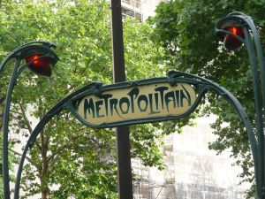
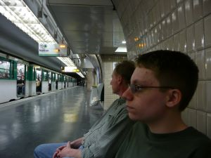
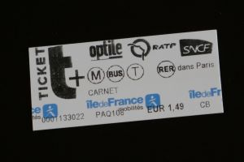

Transportation
The metro
is underground transportation that travels through the city.

A metro sign in Paris.
Reasons to Use the Metro

Metro Line 6.
- The metro is fast, inexpensive to use, and runs frequently.
- Maps for the metro are easy to follow.
- Signs for route transfers in the tunnels are well marked.
Tips for Using the Metro
- One t+ ticket is good for the following forms of
transportation: the metro, RER Zone 1, regional buses, trams, or the
Montmarte Funicular.
- One ticket permits unlimited transfers for 90 minutes to any metro
line or the RER in Zone 1 (central Paris).
- Another option for the tickets permits transfers
between buses and trams. However, transfers cannot be made from the metro to a bus or tram.
Paris Metro tickets prior to electronic upgrade.
- Be fast getting on and off the metro because it only stops for a
short period of time.
- Prepare for the metro to be crowded.
- Watch out for pickpockets. They usually use a bump and distract technique to
steal valuables.
- Use a metro map to plan routes.
- Transfers can involve several minutes walking underground to the next
transfer station. The routes are well marked.
RER
The RER is a local train
that travels within Paris and to some nearby cities.
Reasons to Use the RER
- The RER goes to Versailles, Charles de Gaulle Airport, and other
suburban areas of Paris.
- There is also an RER train that goes to Disneyland Paris.
Tips for Using the RER

RER Zone 1 ticket prior to electronic upgrade.
- A ticket for the RER includes the local metro and all transfers as long as visitors
don't go above ground when transferring.
- The RER doesn't run as frequently as the metro.
RER B can be used to go to and from the
Charles de
Gaulle Airport.